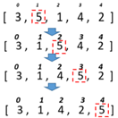

ДЗ №12
Обов'язкові завдання
Дано масив 30 випадкових цілих чисел. Підрахувати скільки було обмінів та порівнянь чисел під час сортування
бульбашкою.
Дано масив 30 випадкових цілих чисел. Підрахувати скільки було обмінів та порівнянь чисел під час сортування
змішуванням.
Дано масив 30 випадкових цілих чисел. Підрахувати скільки було обмінів та порівнянь чисел під час сортування
включеннями.
Для розглянутих методів сортування спробувати вивести етапи сортування шляхом виведення відповідних таблиць за
зразком.

Тобто кожного разу після обміну елементів вивести поточний стан масиву на екран (стрілки не потрібні).
Дано масив імен. Застосовуючи відповідне сортування та бінарний пошук визначити, чи є у масиві ім’я «Olga» і під
яким індексом.
Дано масив імен. Застосовуючи відповідне сортування та бінарний пошук визначити, чи є у масиві ім’я довжиною 5
символів і під яким індексом.